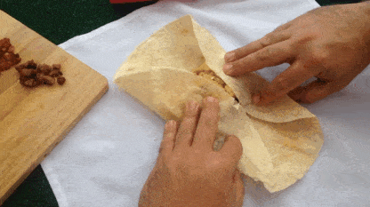

Budget-Friendly Breakfast Burritos

Description
Breakfast is the most important meal of the day. Sometimes when you're in a rush in the morning, you don't have time to make anythying.
The solution? Meal prep breakfast burritos for the whole week so you can just heat one up in the microwave in the morning and a quick but filling (and delicious) breakfast.
You can meal prep your breakfast for the entire week with this simple yet scrumptions breakfast burrito recipe, all prepared in under 30 minutes! Let's get started.
Ingredients
- 2tbsp butter
- 1 yellow onion
- 4oz spinach leaves
- 4oz sliced mushrooms
- 12 large eggs
- 1lb spicy breakfast sausage
- 8 large tortillas (burrito size)
- Shredded pepperjack cheese (or your favorite shredded cheese of choice)
Steps
- Dice the yellow onion while heating up a large skillet with 1tbsp of butter.
- Add the diced yellow onion, mushrooms, and spinach leaves to the large skillet and saute over medium heat for about 5 minutes.
- In another large skillet, cook the spicy breakfast sausage over medium heat until it is browned (about 5-7 minutes)
- While the meat is cooking, crack the 12 eggs into a bowl and lightly whisk. Add the whisked eggs to your initial large skillet with the onions, spinach, and mushrooms until the eggs are cooked. DO NOT overcook the eggs or they'll become dry. Season with salt and pepper to taste.
- To assemble the burritos, add a scoop of the eggs and vegetables to the center of the tortillas then top with a scoop of sausage and a handful of cheese.
- Roll the burrito as demonstrated below:

- To finish the meal prep, roll each burrito in tin foil or parchment paper and place in freezer bags to be stored in your freezer.
Pro Tip: Move a burrito from the freezer to the fridge the night before you reheat it so it can thaw overnight.
Reheat Instructions
- From Refridgerated: Microwave on high for 1 minute, then heat in a skillet on medium-low for about 5 minutes on each side until the tortilla is crispy. Add hot sauce if you'd like.
- From Frozen: Microwave on defrost setting for about 5 minutes, then microwave on high for 1 minute, then heat in a skillet as described above.
Enjoy!